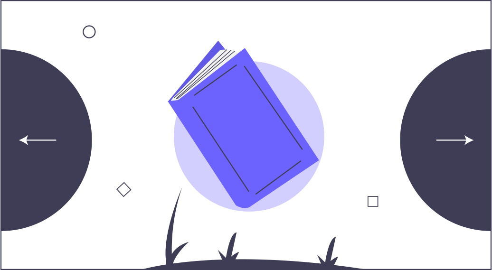
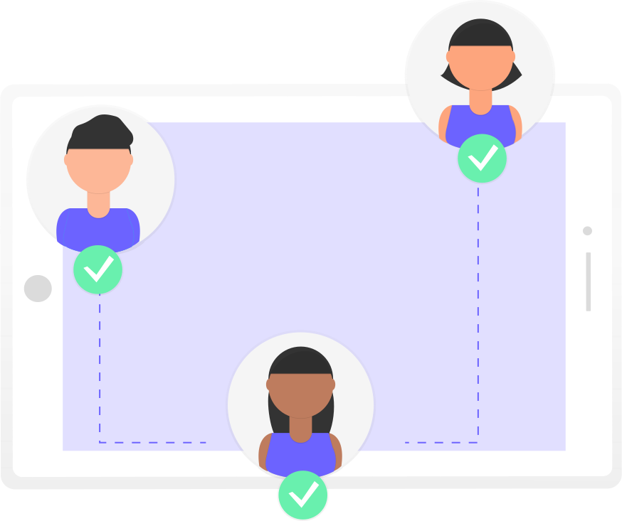
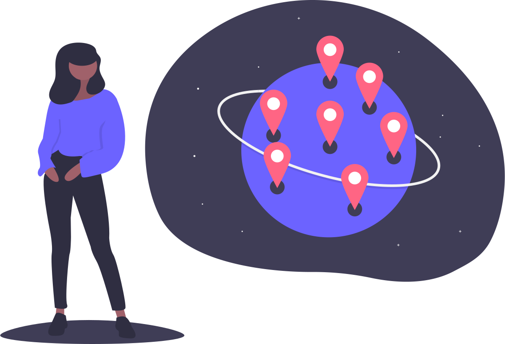

Thiago D.
Escritor e desenvolvedor do Meio MundoMeio Mundo
A ideia é, todo dia ler algumas páginas.
 Doação de livros
Doação de livros
Encontramos uma nova finalidade para os livros usados: democratizar o acesso à leitura.
 Ler transforma vidas
Ler transforma vidas
Acreditamos tanto nisso, que queremos que outras pessoas tenham acesso a oportunidade de ler.

"Eu acho que todo mundo pode gostar de ler, sim."

Thiago D.
"Já começamos a ler, e já estou encantada com o Vô, inclusive já sei até pra quem vou passar esse livro quando terminar!"
 Ana Júlia Carvalho Zucareli
Ana Júlia Carvalho Zucareli
Os nove pentes d'africa
Quando o seu livro chegar?
Aproveite e leia, mas faça da doação de livros um hábito, indique para um amigo e peça para que quando ele terminar à leitura, também continue conectando livros a outras pessoas.
 Participe da nossa comunidade usando a hashtag:#MeioMundoDeLeitores
Seja bem-vindo à meio mundo de leitores
Os livros foram o que mais me trouxeram aprendizados e/ou me deram novas visões de mundo, desde empatia, cultura, honra, lealdade, amizade e até mesmo saber que crueldade e violência; é a válvula que gera ainda mais caos e violência.
Livro após livro, trilogia após trilogia... uma pagína depois da outra, são todos e cada um desses livros que li até hoje que me ensinaram tanto sobre a vida, que moldaram muito do meu caráter, dos meus valores e do homem que sou.
Todos esses livros, eu carrego um pouco comigo, e são referências de vida, de escrita, de criatividade e em como enxergo à literatura. Então, quem solicitar um deles como doação, peço que leia de verdade e que repasse para outro alguém depois de lido, ler transforma vidas.
Eu acredito tanto nisso, que quero que outras pessoas tenham essa oportunidade de ler. Fiquem à vontade ❤️
